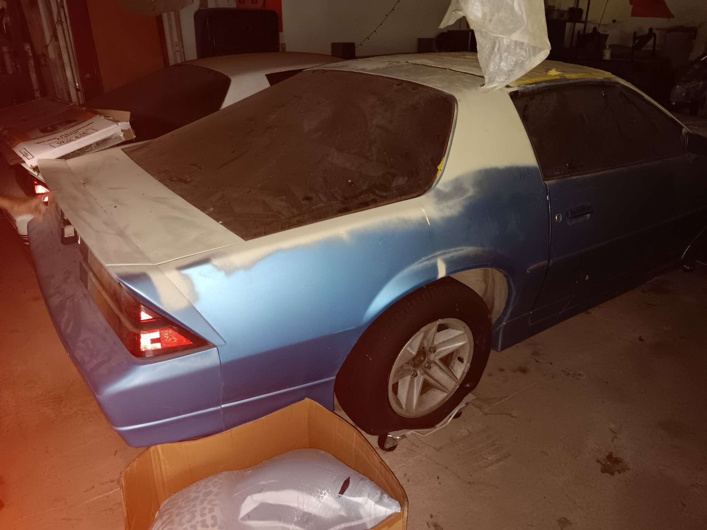

ASKING $4,500 EACH OR $7,500 FOR BOTH — AS IS
About the cars
Two Camaros with a history, offered individually or as a pair!
The 1989 Camaro was purchased in Loomis, California, in 2005, driven from California to Ohio, and placed in storage in 2006.
The 1985 Camaro was purchased in Amelia, Ohio, as a running parts car and was also placed in storage. The previous owner had plans for these vehicles but never got around to completing the projects.
Both Camaros are now part of his estate and are being offered for sale in their present, long-stored condition.
1989 Camaro — $4,500
1985 Camaro — $4,500
Both Camaros — $7,500
Serious offers considered. Prices reflect the vehicles' current condition and are subject to change once we get the cars running again.
Important: The current engines, transmissions, drivetrains, and running condition have not yet been verified. Both vehicles are offered as-is, pending further inspection.
Original barn photographs
Model years are based on the available vehicle titles. Buyers should confirm the identification and title for each car before purchase. Photos show the cars in storage; no mechanical inspection or roadworthiness is represented.